<title>Stair Hall Rebuild</title>
<meta name="claude:viewport-fit-sides" content="cover">
<link rel="stylesheet" href="https://fonts.googleapis.com/css2?family=Barlow+Condensed:wght@500;600&family=Barlow:wght@400;500;600&display=swap">
<style>
/* Layout: same contact-sheet language as the pilot and arch pages. One fade slider per matched camera, then reference frames and open items. */
:root { --paper: #eef1ef; --sheet: #fbfcfb; --ink: #1c2321; --muted: #5d6864; --rule: #cfd6d3; --ok: #2f8f5b; --warn: #b7791f; --accent: #2457c5;
  --display: "Barlow Condensed", "Arial Narrow", sans-serif; --body: "Barlow", system-ui, sans-serif; }
@media (prefers-color-scheme: dark) { :root:not([data-theme="light"]) { --paper: #111514; --sheet: #171c1b; --ink: #e2e8e5; --muted: #95a29d; --rule: #2c3533; --ok: #4fbf84; --warn: #e0a84a; --accent: #7aa2ff; color-scheme: dark } }
:root[data-theme="dark"] { --paper: #111514; --sheet: #171c1b; --ink: #e2e8e5; --muted: #95a29d; --rule: #2c3533; --ok: #4fbf84; --warn: #e0a84a; --accent: #7aa2ff; color-scheme: dark }
body { background: var(--paper); color: var(--ink); font: 16px/1.55 var(--body); padding-left: max(16px, env(safe-area-inset-left, 0px)); padding-right: max(16px, env(safe-area-inset-right, 0px)); padding-block: 20px 40px; }
main { max-width: 1100px; margin: 0 auto; display: grid; gap: 28px; }
h1 { font: 600 34px/1.1 var(--display); margin: 0; text-wrap: balance; }
h2 { font: 600 22px/1.2 var(--display); margin: 0 0 10px; letter-spacing: .01em; text-wrap: balance; }
p { margin: 0; max-width: 68ch; }
.lead { color: var(--muted); margin-top: 6px; }
.block { display: grid; gap: 10px; }
.checks { display: grid; grid-template-columns: repeat(auto-fit, minmax(160px, 1fr)); gap: 10px; }
.checks div { background: var(--sheet); border: 1px solid var(--rule); border-top: 3px solid var(--ok); border-radius: 3px; padding: 8px 10px; }
.checks b { font: 600 22px var(--display); display: block; font-variant-numeric: tabular-nums; }
.checks span { font-size: 13px; color: var(--muted); }
figure { margin: 0; background: var(--sheet); border: 1px solid var(--rule); border-radius: 3px; overflow: hidden; }
figure img { display: block; width: 100%; height: auto; max-width: 100%; }
figcaption { font-size: 13.5px; color: var(--muted); padding: 6px 10px 8px; }
figcaption b { color: var(--ink); font-weight: 600; }
.stack { position: relative; aspect-ratio: 16 / 9; max-width: 100%; background: #000; }
.stack img { position: absolute; inset: 0; width: 100%; height: 100%; object-fit: contain; }
.slider { display: flex; align-items: center; gap: 10px; padding: 8px 10px; font: 600 12px var(--display); letter-spacing: .08em; text-transform: uppercase; color: var(--muted); }
.slider input { flex: 1; min-width: 0; accent-color: var(--accent); }
.slider input:focus-visible { outline: 2px solid var(--accent); outline-offset: 2px; }
.pair { display: grid; grid-template-columns: 1fr 1fr; gap: 8px; }
@media (max-width: 700px) { .pair { grid-template-columns: 1fr; } }
.tag { font: 600 11px var(--display); letter-spacing: .08em; text-transform: uppercase; color: var(--muted); }
ul { margin: 0; padding-left: 20px; max-width: 68ch; }
li + li { margin-top: 4px; }
</style>

<main>
  <header>
    <h1>Stair Hall Rebuild</h1>
    <p class="lead">Phase 5: the foyer and stair hall rebuilt with real shared walls. The stairwell's upstairs walls stand on the foyer walls below, and the landing is a slab inside one two-storey space. Each slider fades from Marina's tour (or the film) to the new build, seen from the same camera, worked out from the stair's own steps. New scene: House_WallGrid. TRIAL until you walk it.</p>
  </header>

  <section class="block">
    <h2>Checks on the new build</h2>
    <div class="checks">
      <div><b>0 / 0 / 0</b><span>flicker, ledges, gaps (the old known ledges are gone)</span></div>
      <div><b>0 of 622,104</b><span>sight lines from a room you can walk in that see into a closed space</span></div>
      <div><b>0 of 30</b><span>stair legs blocked, including your own controller (no stall)</span></div>
      <div><b>0</b><span>light leaks; door and room walks all clear</span></div>
    </div>
  </section>

  <section class="block">
    <h2>Marina's tour against the build</h2>
    <p class="tag">Drag to fade from her frame to the build</p>
    <figure>
      <div class="stack">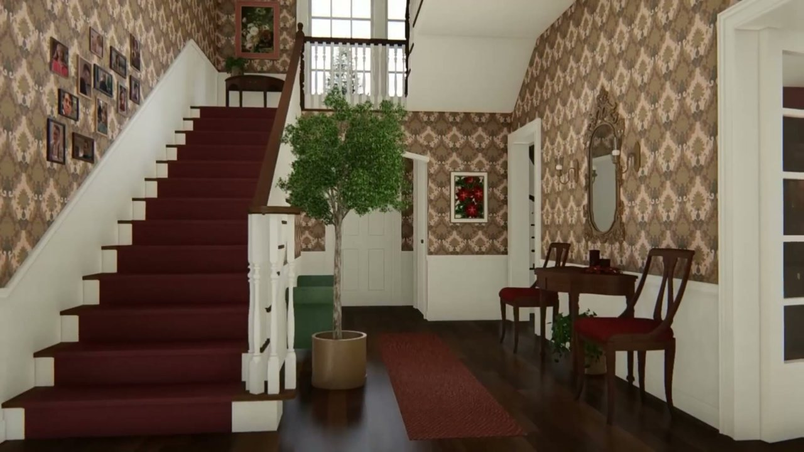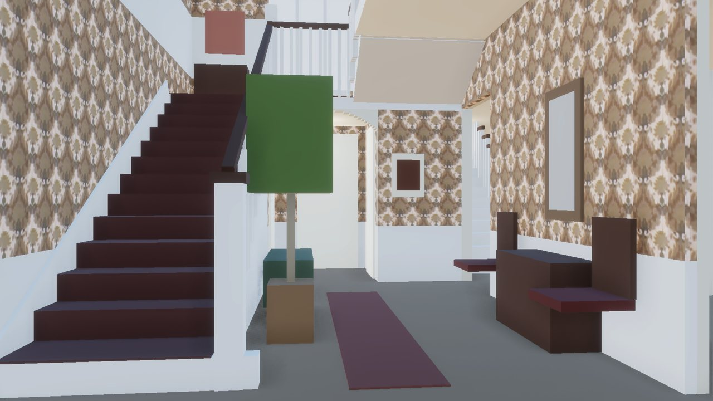</div>
      <label class="slider" for="m312">Marina <input id="m312" type="range" min="0" max="100" value="50"> Build</label>
      <figcaption><b>312 s, from the front door.</b> Camera worked out from 24 step corners (1.9 px fit). The stair, landing, back wall and north wall should sit on hers.</figcaption>
    </figure>
    <figure>
      <div class="stack">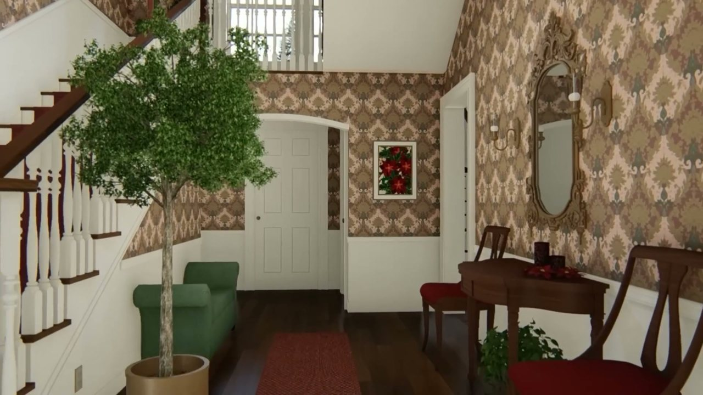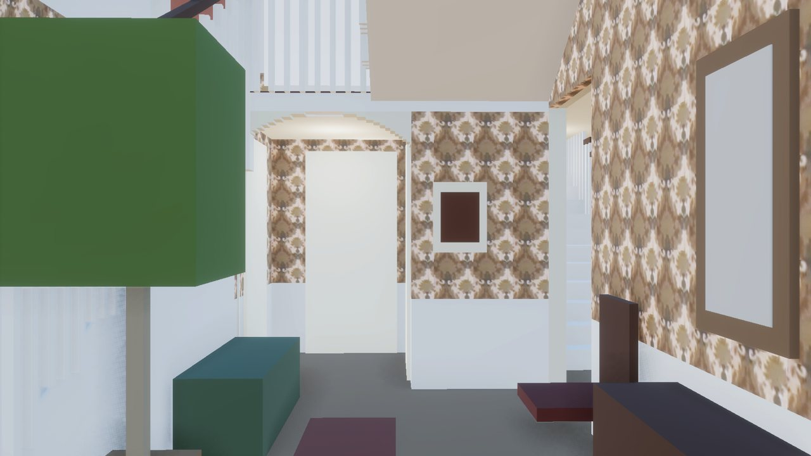</div>
      <label class="slider" for="m1068">Marina <input id="m1068" type="range" min="0" max="100" value="50"> Build</label>
      <figcaption><b>1068 s, facing the back wall.</b> A rougher camera (worked out from 7 tread ends, 9 px fit), but the same lens as 312 s. The arch, rear door and picture are the parts to judge.</figcaption>
    </figure>
  </section>

  <section class="block">
    <h2>The film against the build</h2>
    <figure>
      <div class="stack">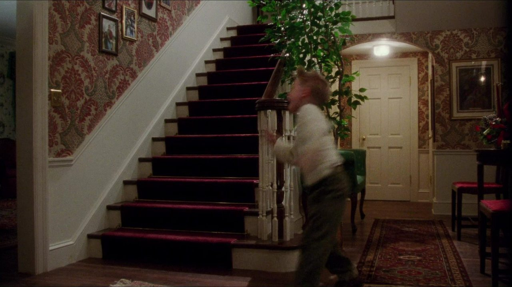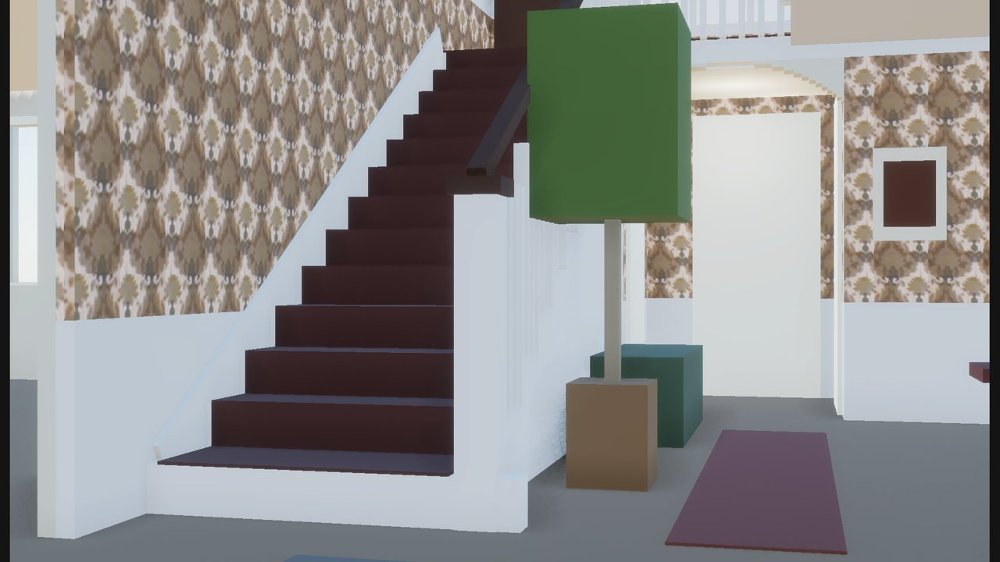</div>
      <label class="slider" for="f2677">Film <input id="f2677" type="range" min="0" max="100" value="50"> Build</label>
      <figcaption><b>2677.</b> The arch is now wider on the left, out to the stair, per Marina; the film's tree hides that side.</figcaption>
    </figure>
    <figure>
      <div class="stack">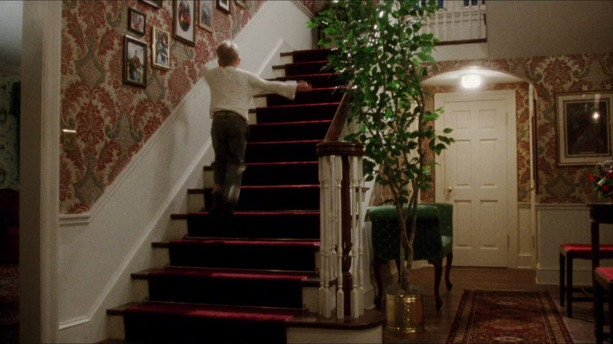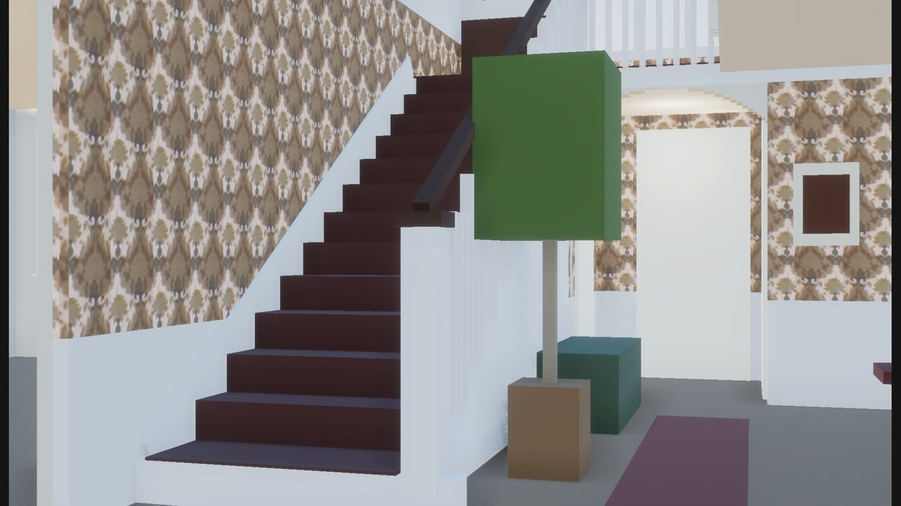</div>
      <label class="slider" for="f3888">Film <input id="f3888" type="range" min="0" max="100" value="50"> Build</label>
      <figcaption><b>3888.</b></figcaption>
    </figure>
    <figure>
      <div class="stack">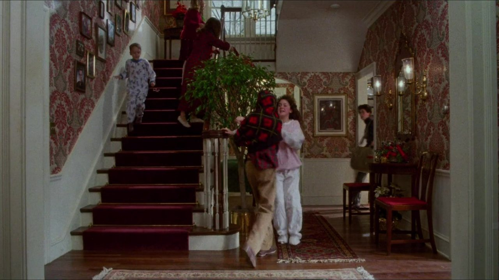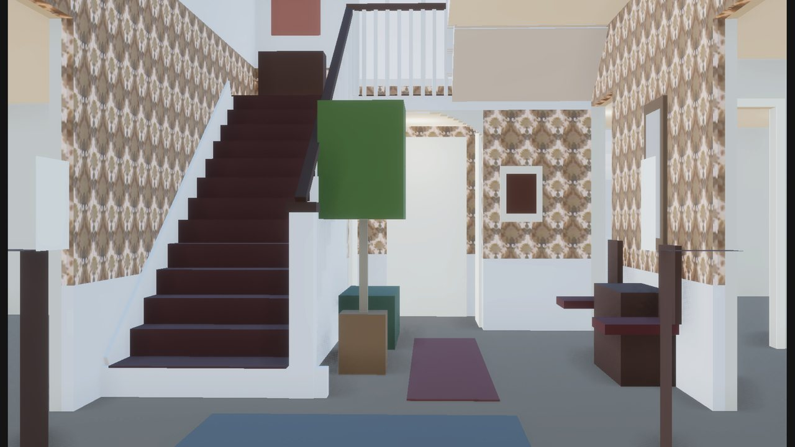</div>
      <label class="slider" for="f1616">Film <input id="f1616" type="range" min="0" max="100" value="50"> Build</label>
      <figcaption><b>1616.</b> The right-hand wall (the kitchen doorway) still reads 4–9 in further in than built.</figcaption>
    </figure>
  </section>

  <section class="block">
    <h2>Marina's views of the arch</h2>
    <p>No camera for these yet (the stair's steps aren't in view), so they're shown for reference.</p>
    <div class="pair">
      <figure>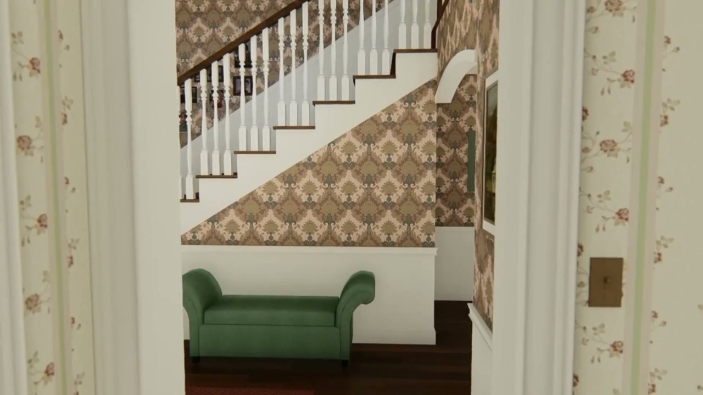<figcaption><b>195 s, from the breakfast area.</b> The wall under the stair ends in a finished corner and the arch springs right off it: no pier.</figcaption></figure>
      <figure>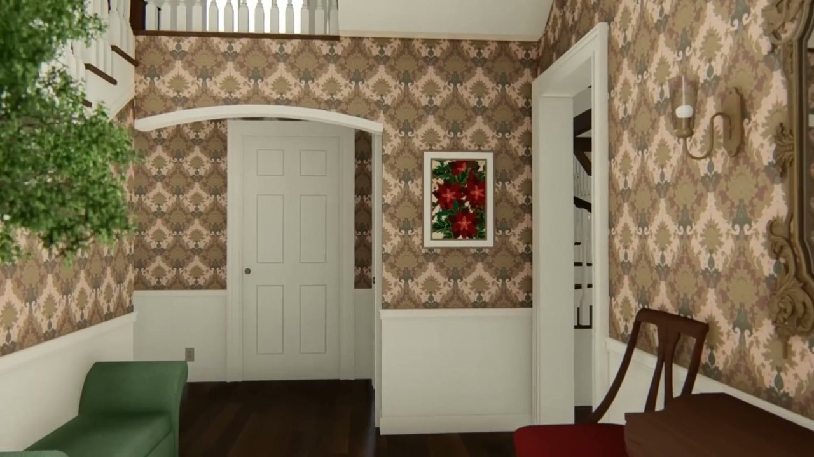<figcaption><b>1070.5 s, face-on.</b> Inside the arch on the left, the passage widens into a recess past the stair's line.</figcaption></figure>
    </div>
  </section>

  <section class="block">
    <h2>Still open</h2>
    <ul>
      <li>The passage behind the arch: its depth is fixed by the landing and the rear door, but its width on the left is uncertain (flush with the stair, as you asked, or Marina's recess). The two side doors are placed by hand. Parked for later; it's a data change when you want it.</li>
      <li>The foyer's right-hand wall may sit 4–9 in further in (film 1616).</li>
      <li>To make the stairwell one two-storey wall, some upstairs walls moved: the north line 2 in, the south line 1¼ in, and the hall end is 4 in shorter.</li>
    </ul>
  </section>
</main>

<script>
document.querySelectorAll(".slider input").forEach(function (r) {
  var top = r.closest("figure").querySelector(".top");
  function set() { top.style.opacity = r.value / 100; }
  r.addEventListener("input", set); set();
});
</script>
